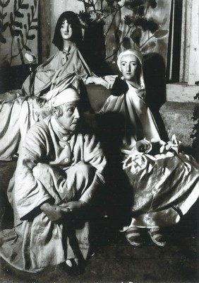

Biographie Helen Dahm
Helen Dahm
1878 - 1968
1878
Am 21. Mai Geburt von Helen Dahm als Älteste von vier Kindern in der „Rosenegg“, Egelshofen bei Kreuzlingen TG. Der Vater, Friedrich Hugo Dahm (1850 - 1912), ist wie sein Vater als Kaufmann in der Seidenbranche tätig. Die Grosseltern Dahm, die von Elberfeld (Deutschland) stammen, erwerben sich und ihren sieben Söhnen 1848 das Schweizer Bürgerrecht in Kurzrickenbach TG und lassen sich in Kreuzlingen nieder. Von der Mutter, Helena Wilhelmina Dahm-Ammann (1854 - 1907), Tochter aus zweiter Ehe von Dr. med. Adrian August Ammann von Ermatingen, will Helen Dahm Sinn für Verantwortlichkeit erhalten haben, die frohe Leichtigkeit, die Phantasie und den Humor hingegen von den Dahms. Die Eltern wohnen nach der Heirat und dem plötzlichen Tod des Grossvaters Ammann im selben Jahr 1876 mit der verwitweten Grossmutter in der „Rosenegg“, im ehemaligen Doktorhaus, einem aristokratischen barocken Herrschaftssitz.
bis 1883
gemeinsame Kindheit mit den jüngeren Geschwistern Hugo (1879 - 1955) und Charlotte (1882 - 1908) und dem benachbarten Pfarrerssohn Hans Brühlmann (1878 - 1911), dem bekannten Maler.
1883
zieht die junge Familie, nach dem Tod der Grossmütter (die Grossväter starben vor Helen Dahms Geburt), ins Dahmsche Haus nach Kreuzlingen. In den folgenden Jahren Schulbesuch in Konstanz und erster Mal- und Zeichenunterricht bei Max von Sury in Kreuzlingen. Um 1884 schwere Erkrankung der dreissigjährigen Mutter.
1887
Tod eines Nachzüglers mit sechs Monaten.
1897
Nach dem Konkurs des väterlichen Geschäftes übersiedelt die fünfköpfige Familie nach Zürich. Die Mutter eröffnet an der Schönleinstrasse eine Pension für Studenten und Dozenten, die sich bald eines guten Rufes erfreut.
1898 - 1906
Neben praktischer Mitarbeit im grossen Haushalt der neuen Pension intensives Zeichnen in langen Nächten. Kurse an der Kunstgewerbeschule und an der Stadlerschule (Kunstschule für Frauen im ehemaligen Böcklinatelier) in Zürich bei Hermann Gattiker und Ernst Würtenberger. Vor allem graphische Techniken: Farb-, Bleistiftzeichnungen und Radierungen, naturgetreue Landschaftsstudien einsamer, verträumter, oft düsterer Orte ohne Mensch und Tier. Das erste Oelbild „Flusslandschaft“ ist von 1903 datiert.
1906 - 1913
In München zur künstlerischen Weiterbildung, mit bescheidenem Stipendium der Familie Volkart-Ammann, Winterthur. Endgültiger Bruch mit der Familie. Freundschaft mit Else Strantz, einer zwölf Jahre älteren Berlinerin. Durch sie Kontakt mit der Künstlergruppe „Blauer Reiter“. Kurse an der Kunstakademie für Frauen bei Robert Engels und Julius Exter, auch an der Kunstschule für graphische Techniken bei Mortiz Heymann. Auseinandersetzung mit dem deutschen Expressionismus, graphische Techniken (Radierungen und Holzschnitte) und einzelne Oelbilder.
1911
Im Frühjahr auf einer Italienreise in Florenz und Rom, beeindruckt von Cimabue und Giotto. Aufenthalte auch in St. Peter in Tirol und in Oberbayern.
1913 - 1919
Nach der Rückkehr nach Zürich Atelierwohnung mit Else Strantz an der Gemeindestrasse. Kunstgewerbliche Tätigkeit für den Lebensunterhalt: selbstgefärbte und bedruckte Stoffe, Holz- und Linolschnitte, Monotypien und Pinselzeichnungen: Frauenakte, monumentale Frauenköpfe. Einzelne Oelbilder.
1916
Atelier-Ausstellung. Zeitungsartikel von Else Strantz: „Ein eigengearteter Wille gibt sich in den Arbeiten von Helen Dahms zu erkennen, der zäh die einmal eingeschlagenen Pfade verfolgt. Nicht Schönheit im gewöhnlichen Sinn sucht sie, sondern Ausdruck, Rhythmus, Bewegung ...“ („Zürcher Post“, 10. Oktober 1916).
1919
Übersiedelung nach Oetwil am See zusammen mit E. Strantz, im Dörfli eigenes Haus und Garten. Zunehmend gespanntes Verhältnis der zwei ungleichen Frauen. Freundschaftliche Beziehung zu Nachbarn und deren Kindern. Naturverbundenes, einfaches Leben, ausgedehnte Spaziergänge in die Gegend des Pfannenstiels.
um 1930
Künstlerisch äusserst fruchtbare Zeit trotz mangelnder öffentlicher Anerkennung. Vorwiegend Ölbilder, auch Hinterglasmalerei. Eigene Bildsprache, Vereinfachung der Form und satt pastoser Farbauftrag mit dem Pinsel, Spachtel oder den Fingern. Bildthemen der ländlichen Umgebung: Föhnlandschaft vom Zürcher Oberland, Steinbruch, Bauernhäuser, das eigene Haus mit Garten, Blumen aller Art, Stilleben mit Früchten, Geschirr und Gefässen; Porträts von Bekannten und Selbstbildnisse.
1932
Schwere Trennung von Else Strantz. Zurückgezogenes Leben allein im selben Haus.
um 1933
Nur wenige Werke in Oel und Pastell.
1934
Begegnung mit dem indischen Weisen Shri Meher Baba durch das Ehepaar Mertens. Neue Hoffnung.
1937
In Cannes Zusammenkunft mit Shri Meher Baba, Einladung des Weisen in seinen Frauen-Ashram nach Indien. Zu den persönlichen Angaben für das Künstlerlexikon schreibt Helen Dahm in einem Brief an den Kunsthausdirektor: „Ein paar äusserliche Angaben sind meines Erachtens auch ganz wertlos, es sind nicht die äussern Daten, es sind die innern Erlebnisse und das ewige Ringen um seinen Ausdruck.“
1938
Wegen des bevorstehenden Indienaufenthaltes Verkauf des Hauses und Auflösung des Haushaltes. Mit Hedy Mertens und zwei weiteren Europäerinnen Reise nach Indien, in der Absicht, für längere Zeit, vielleicht für immer dort zu leben.
1938/39
Im Frauen-Ashram von Shri Meher Baba, in Ahmednagar und Meherabad in der Nähe von Poona. Ungewohnt enge Lebensgemenschaft, Helen Dahm wird bald zur Aussenseiterin. Zu Beginn des Aufenthaltes von Shri Meher Baba auferlegtes Mal- und zeichenverbot. Nach zähen Bemühungen um deren Aufhebung Auftrag, das spätere Grabmal des Weisen bildnerisch zu gestalten. Wand- und Deckenmalerei im kleinen Kuppelbau, Darstellung einer um Shri Meher Baba versammelten Menschenmenge.
Im Dezember auf einer beschwerlichen Busreise in grosser Hitze mit Baba und Anhängern Erkrankung an Ruhr, verzweifelte Stimmung. Spitalaufenthalte in Bhopal und Juppelpure. Aus gesundheitlichen Gründen Rückkehr in die Schweiz. Vor Ausbruch des Zweiten Weltkrieges in Begleitung von H. Mertens mit dem Schiff nach Venedig. Erholung im Hause Mertens. Sehnsucht nach Oetwil am See.
1939 - 1968
Nach dem Indienaufenthalt lebt Helen Dahm bis zu ihrem Tode allein in einem Bauernhaus in der Aegertenwies, Oetwil am See.
um 1940
Bilder aus der Erinnerung an Indien: Wüstenlandschaften, Büffelherde, indische Frauen; in zarten Pastelltönen von Grau und Braun. Freundschaft mit dem Gemeindepfarrer-Ehepaar G. und E. Vischer, Hinwendung zum christlichen Glauben.
um 1945
Religiöse Bildthemen im Vordergrund, Blumen- und Gartenbilder. Mehrere Fassungen des gleichen Themas in Oel und Pastell, davon Abklatsche und Umdrucke, wieder Hinterglasmalerei. Unterstützung durch einen treuen Freundeskreis. Weiterhin fehlende Anerkennung in der Öffentlichkeit.
1948
Zum 70. Geburtstag mehrere Zeitungsartikel von Doris Wild, Walter Tappolet und anderen. Max Eichenberger, Kunstritiker bei der „TAT“, schreibt erstmals über Helen Dahms Bilder anlässlich einer Zürich-Land-Ausstellung. Hausärztliche Betreuung durch Konrad Witzig während der letzten zwanzig Lebensjahre.
1949
Im Frühjahr nach einer Lungenentzündung Erholung in Neggio TI bei katholischen Schwestern.
1952
Ende Oktober dreiwöchige Erholungskur in Cademario TI. Entwurf für ein nicht ausgeführtes Wandbild in ein Kirchgemeindehaus in Bern: „Verkündigung an die Hirten“; Studien fliegender und posaunender Engel. Bildstickerei mit Wolle. Arnold d’Altri modelliert Helen Dahms Kopf (Bronzeabguss).
1953
kraftvolle Malerei: Garten- und Blumenbilder, Selbstbildnisse.
1954
Im Herbst drei Wochen in Cademario TI. Am 5. Dezember Verleihung des Kunstpreises der Stadt Zürich in der Tonhalle, Ansprache von Pfarrer Robert Lejeune.
1955
Schenkung von 66 Werken an die Stadt Zürich, weitere Bilderschenkung an das Spital Männedorf.
um 1955
Rund 30 Lithografien in Schwarzweiss und sechs farbige („Afied“) nach bekannten und neuen Themen, beim Verein für Originalgraphik, Zürich.
1956
Freskomalerei an den Aussenwänden der Friedhofkapelle in Adliswil ZH: Pietà mit trauernden Frauen, Berg der Auferstehung und Riesenkerbel; an der Seitenwand zwei Engel und Maria mit Kerze. In der Weihnachtszeit bemalte Stubenfenster, Engel und Dämonen.
1957
Zur Fasnachtszeit lebensgrosse, bunte Puppen in der Stube.
1957
Erste ungegenständliche, tachistische Werke.
1957/58
Beteiligung an einer Gruppenausstellung über ungegenständliche Malerei im Kunsthaus Zürich. Zweifel und Ablehnung durch viele, auch der meisten Freunde. Begeisterte Anerkennung und Förderung von Max Eichenberger.
1958
Im Herbst nach langer, intensiver Arbeit an „Flecken- und Gitterbildern“ schwere, lebensbedrohende Erkrankung an Lungenentzündung, dreimonatiger Spitalaufenhalt in Männedorf.
1959
Anschliessend drei Monate zur Erholung in Braunwald GL im christlichen Haus „Bergfrieden“. Regelmässige Besuche von Freunden, reger Briefwechsel. Tagebuchblätter, etwa 150 lose Zeichnungen im A4-Format: Schnee- und Berglandschaften, Skifahrer, Pflanzen und unbekannte Erinnerungen.
Nach der Rückkehr in ihr Haus allmählich wieder erstaunliche Kraft und Ausdauer für Werke mit den verschiedensten Materialien. Graue Materialbilder mit Fango- und Kunstharzmasse.
um 1960
„Splitterbilder“; Mosaike; schmierige, ungegenständliche Oelbilder mit dickem Farbauftrag; mehrfach überarbeitete Blätter, teils grelle, teils schmutzige Mischfarben. Aber auch klare gegenständliche Oelmalerei, Blumen- und Traumbilder, Bildgrund meist schwarz.
1960
Ende Sommer zweimonatiger Spitalaufenthalt in Männedorf. In der Weihnachtszeit Stubenfenster mit farbigem Seidenpapier collagenartig gestaltete Szenen aus der Weinachtsgeschichte.
1961
Im 19. Januar plötzlicher Tod von Max Eichenberger nach einem Besuch bei Helen Dahm. Der jähe Abbruch der nahen Freundschaft erschüttert sie tief.
1962
Zur Fasnachtszeit lebensgrosse Pupppen in der Stube. Am 21. Mai Geburtstagsfest mit Ballonwettbewerb für die Schulkinder ihrer Gemeinde. Ausgiebige Lektüre von Gottfried Benns Werken. In Benn findet Helen Dahm einen wahlverwandten Bruder. Sein Gedicht „Aus Fernen, aus Reichen“ lernt sie auswendig. Im Dezember bemalte Stubenfenster mit Fingerfarben: Blumen, hereinguckende Kinder, Engel und Maria mit dem Kind.
1963
Zeichnungen für den Kunstband „Helen Dahm, Buch der Freunde“: Grotten, Urtiere, Schlangen und Sämchen. Werke aus Ton: Oelbadblätter; ungegenständliche und gegenständliche Monotypien, Lithographien.
Zum 85. Geburtstag bringt Paul Portmann den Entwurf zu „Helen Dahm, Buch der Freunde“. Im Sommer erfolgreiche Einzelausstellung im Kunsthaus Zürich. Zur Weihnachtszeit Stubenfenster mit farbigem Seidenpapier beklebt.
1964
bis Mitte Januar im Spital Männedorf. Am 21. Mai sitzt „der Tod“ auf dem Ofen in der Stube (ein mit Schädel, Knochen und Tüchern arrangiertes Gebilde). Tod und Sterben sind zentrale Themen. Träume beschäftigen Helen Dahm nachhaltig. Grossformatige Oelbilder; vier ungegenständliche Materialbilder für die Expo in Lausanne im Format eines Sarges; Blätter mit leicht hingeworfenen Kritzeleien.
1965
Starkfarbene Collagen: Darstellungen mit Träumen, Blumen und Tieren; vorwiegend gegenständliche Oelmalerei; Neocolor- und Filzstiftzeichnungen.
1966
Die Fernsehsendung des Theaterstückes „Yerma“ von F.G. Lorca bewirkt eine aufwühlende Auseinandersetzung mit dem eigenen Leben. Fragen von Schuld und Vergebung werden bildnerisch dargestellt, Bildzyklus von „Yerma“ und „Jesus und die Sünderin“.Im Dezember bis Mitte Januar Spitalaufenthalt in Männedorf.
1967
Helen Dahm strickt und bestickt ihre Sargdecke: ein rotes Wolltuch (210 x 55 cm) mit je fünf weissen und schwarzen, schachbrettartig angeordneten Flächen, mit pflanzenhaften Zeichen. Monotypien vor allem Blauweiss auf Schwarz; letzte Oelbilder.
1968
Im Frühjahr nach einer Steissbeinfraktur zehn Tage im Pflegeheim „Wäckerlingstiftung“ in Uetikon am See. Zum 90. Geburtstag lässt Helen Dahm ihre Stube in einen feierlichen Trauerraum mit schwarzseidenen Vorhängen und geschwärztem Fussboden umgestalten. Sie möchte sterben, sehnt den Tod herbei.
Am 19. Mai Dorffest zu ihren Ehren, von Christian Tischhauser organisert, mit Festgottesdienst, Umzug, Kutschenfahrt und Mittagessen im Freien. In der folgenden Nacht stürzt Helen Dahm und zieht sich Frakturen zu (Schenkelhals und Vorderarm), Spitaleinweisung nach Männedorf. Am 21. Mai, ihrem 90. Geburtstag, operative Nagelung. Am 24. Mai stirbt Helen Dahm während der Arztvisite im Spital. Bestattung auf dem Friedhof in Oetwil am See.
Zusammengestellt von Dr. Regula Witzig.